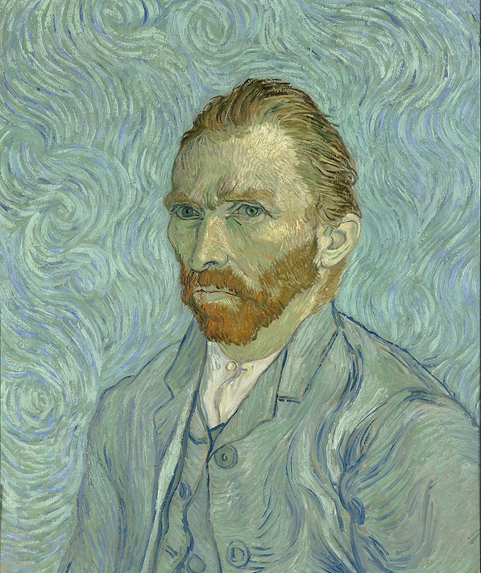

Van Gogh self-portrait
Vincent Van Gogh

Van Gogh self-portrait
Vincent Van Gogh
1889
This self-portrait was one of about 32 produced over a 10-year period, and these were an important part of his work as a painter; he painted himself because he often lacked the money to pay for models. He took the painting with him to Auvers-sur-Oise, near Paris, where he showed it to Dr. Paul Gachet, who thought it was "absolutely fanatical". Art historians are divided as to whether this painting or Self-portrait without beard is Van Gogh's final self-portrait. The art historians Ingo F. Walther and Jan Hulsker consider this to be the last.
GO TO SOURCE